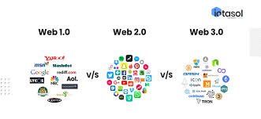

The web has evolved through several versions, each bringing new features and capabilities. Web 1.0, also known as the "static web," was the early stage of the internet where websites were primarily static and lacked interactivity. Web 2.0, or the "social web," introduced dynamic content, user-generated content, and social media platforms. Web 3.0, often referred to as the "semantic web," focuses on making data more interconnected and machine-readable. Web 4.0 is an emerging concept that envisions a more intelligent and immersive web experience, potentially incorporating technologies like artificial intelligence and virtual reality.